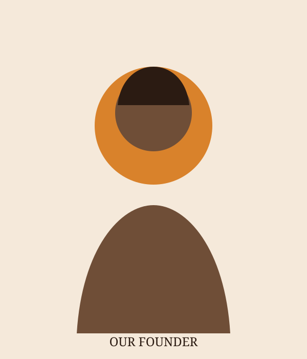

Our Story
Savanna Brew Café was founded in 2019 by Mrs Amina Otieno with a simple vision: to create a welcoming place where people can enjoy quality coffee and good company.
Located at 14 Coffee Lane, Westlands, Nairobi, we serve freshly prepared coffee sourced from Kenyan farming communities, including Nyeri and Kiambu.
Our Mission
Our mission is to serve excellent coffee and fresh pastries while creating a friendly environment for customers and supporting local coffee farmers.
Our Values
- Supporting Kenyan coffee farmers.
- Providing quality products and friendly service.
- Using environmentally friendly packaging.
- Creating a welcoming community space.

More Than Just Coffee
We believe a café should bring people together. Through community events and our commitment to local farmers, we aim to make every visit meaningful.
Explore Our Menu